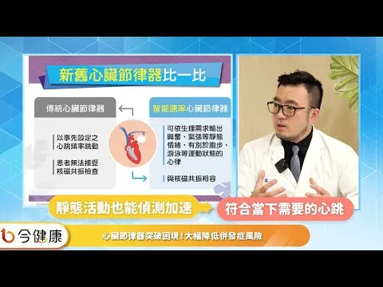
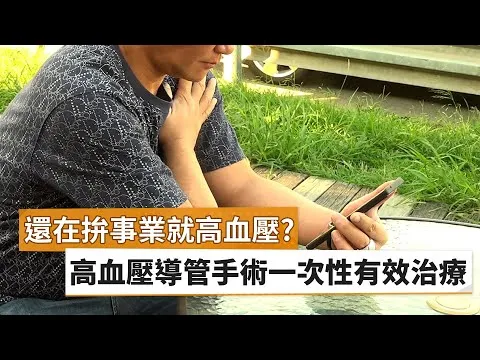

這些年接受媒體邀訪、上廣播與影音節目，談心律不整、高血壓、血脂和心臟衰竭。點標題可以看原報導。
2022-03-30・6:49

2021-12-27・6:50

2021-11-19・4:18
2019-04-26・7:33
新竹馬偕紀念醫院 心臟內科・診間 4。時間以醫院掛號頁公告為準，停診與代診請以掛號頁為準。
桃竹苗就近看診：#桃園#中壢#楊梅#新屋#龍潭#新竹市#竹北#竹東#湖口#新豐#寶山#芎林#竹南#頭份#苗栗